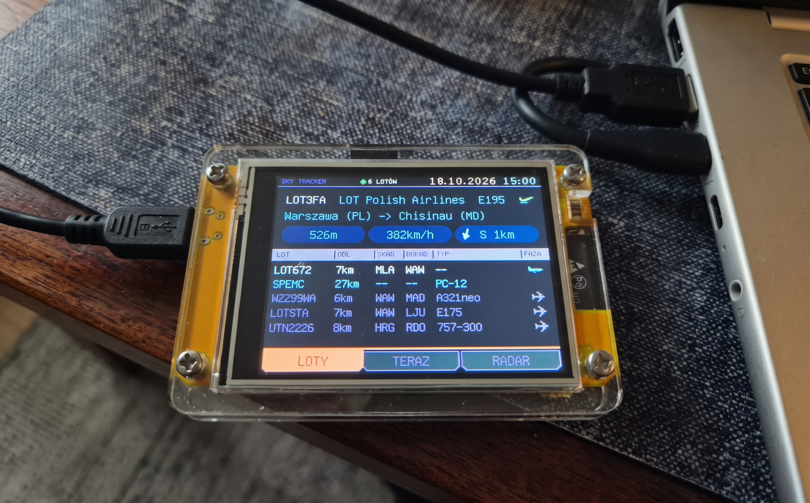

Hobby project · open source · zero subscriptions Projekt hobbystyczny · open source · zero abonamentów
What plane is that?Co to za samolot?
A ~$15 yellow display that settles barbecue arguments. It shows the aircraft over your house, live: airline, type, where it came from, where it's going, and how many seconds until it's right above your head.
Żółty wyświetlacz za ~60 zł, który kończy spory przy grillu. Pokazuje samoloty nad Twoim domem na żywo: linię, typ, skąd leci, dokąd leci i za ile sekund będzie dokładnie nad Twoją głową.

Why does this exist?Skąd to się wzięło?
It's a hobby project by a manager who noticed his calendar was 100% meetings and 0% compiler errors. Fixing that took one ESP32, a lot of coffee, and the discovery that a watchdog reset feels exactly the way it did years ago. Very nostalgic. Would recommend.
To projekt hobbystyczny menedżera, który zauważył, że jego kalendarz to w 100% spotkania i w 0% błędy kompilacji. Naprawa wymagała jednego ESP32, sporo kawy i odkrycia, że reset przez watchdog smakuje dokładnie tak samo jak lata temu. Bardzo nostalgiczne. Polecam.
No Jira tickets were harmed. The only stakeholders are the friends at the grill, pointing at the sky and arguing about the plane right above them.
Żaden ticket w Jirze nie ucierpiał. Jedynymi interesariuszami są przyjaciele przy grillu, którzy pokazują palcem niebo i spierają się o samolot nad ich głowami.
Three screens, zero scrollingTrzy ekrany, zero przewijania


Taking off or landing?Startuje czy ląduje?
The exact question everyone at the barbecue asks. Now with pixel art. Dokładnie to pytanie, które pada przy każdym grillu. Teraz w pixel arcie.
Install in about a minuteInstalacja w około minutę
You'll needPotrzebujesz
- An ESP32-2432S028R “Cheap Yellow Display”, the ILI9341 + resistive-touch variant.Płytkę ESP32-2432S028R („Cheap Yellow Display”) w wariancie z ILI9341 i ekranem rezystancyjnym.
- A USB cable that carries data, not just power. Yes, those exist. Yes, you own several.Kabel USB, który przesyła dane, a nie tylko prąd. Tak, takie istnieją. Tak, masz ich kilka.
- Chrome or Edge on a computer.Chrome albo Edge na komputerze.
ThenPotem
- Plug the board in.Podłącz płytkę.
- Click the button and pick the serial port (usually CP210x or CH340).Kliknij przycisk i wybierz port (zwykle CP210x albo CH340).
- First install: tick Erase device. Updating later? Leave it unticked and your settings stay put.Pierwsza instalacja: zaznacz Erase device. Aktualizacja? Zostaw odznaczone, a ustawienia zostaną.
The cable is only needed once. Later versions go in over WiFi, from the Firmware tab of the settings page. Kabel jest potrzebny tylko raz. Kolejne wersje wgrasz przez WiFi, z zakładki Firmware w panelu ustawień.
Firmware versionWersja firmware …
Prefer doing it by hand? Download the .bin files from
Releases or build
it with PlatformIO. The app-only file also works for OTA updates.
Wolisz ręcznie? Pobierz pliki .bin z
Releases albo
zbuduj w PlatformIO. Plik z samą aplikacją nadaje się też do aktualizacji OTA.
First boot: two minutes of setupPierwsze uruchomienie: dwie minuty konfiguracji
WiFi
The board opens a hotspot called CYD-Sky-Tracker-Setup (no
password). Join it from your phone, pick your home network and type its password.
2.4 GHz only: the ESP32 has never heard of 5 GHz.
Płytka otwiera hotspot CYD-Sky-Tracker-Setup (bez hasła).
Połącz się z nim telefonem, wybierz domową sieć i wpisz hasło. Tylko 2,4 GHz: ESP32 nigdy
nie słyszało o 5 GHz.
Home locationLokalizacja
Open http://cyd-sky.local and paste your coordinates.
Right-clicking a spot in Google Maps copies them. Your house is the centre of the
universe now, at least for this display.
Otwórz http://cyd-sky.local i wklej współrzędne. Prawy klik w
Mapach Google je kopiuje. Twój dom jest teraz środkiem wszechświata, przynajmniej dla
tego wyświetlacza.
OpenSky (optional)OpenSky (opcjonalnie)
It works anonymously out of the box. A free OpenSky account gives you ten times more requests per day, which the settings page helpfully counts for you.
Działa od razu, anonimowo. Darmowe konto OpenSky daje dziesięć razy więcej zapytań dziennie, a panel ustawień uprzejmie je za Ciebie policzy.
Bonus: a backup, because you'll flash it againBonus: kopia zapasowa, bo i tak wgrasz to jeszcze raz
The Backup tab saves every setting to one JSON file and restores it later: after a clean install, on a second board, or after an experiment that seemed like a good idea at the time. Anything missing from the file is left alone. Heads-up: with Include OpenSky credentials ticked, your client secret sits in that file as plain text, so treat it like a password.
Zakładka Kopia zapisuje wszystkie ustawienia do jednego pliku JSON i przywraca je później: po czystej instalacji, na drugiej płytce albo po eksperymencie, który wtedy wydawał się dobrym pomysłem. To, czego nie ma w pliku, zostaje bez zmian. Uwaga: z zaznaczonym Dołącz dane logowania OpenSky sekret klienta leży w pliku zwykłym tekstem, więc traktuj go jak hasło.
New: a "!" when something needs youNowość: „!”, gdy coś wymaga Twojej uwagi

A typo in the OpenSky secret used to surface hours later as "no flights". Now a small ! appears in the header next to the app name: red for an error (OpenSky rejected your login, today's credits are used up), orange for a warning (you're polling more often than your daily limit allows, so it will run out). Tap it and the display says what's wrong in one line each; it closes itself after 15 seconds. The settings page puts the same "!" in a box above the tabs, with the numbers (HTTP code, when the credits come back, the shortest interval that fits) and a link to the tab where you fix it. Fix the cause and the "!" goes away on its own. Nothing to acknowledge.
Literówka w sekrecie OpenSky wychodziła kiedyś po kilku godzinach jako „brak lotów”. Teraz w nagłówku obok nazwy pojawia się małe !: czerwone przy błędzie (OpenSky odrzucił logowanie, dzisiejsze kredyty się skończyły), pomarańczowe przy ostrzeżeniu (odpytujesz częściej, niż pozwala dzienny limit, więc na pewno się skończy). Stuknij je, a wyświetlacz powie w jednej linijce, co jest nie tak; sam się zamknie po 15 sekundach. Strona ustawień pokazuje to samo „!” w ramce nad zakładkami, z liczbami (kod HTTP, kiedy wrócą kredyty, najkrótszy interwał, który się mieści) i linkiem do zakładki, w której to naprawisz. Usuń przyczynę, a „!” zniknie samo. Niczego nie trzeba potwierdzać.
It asks before it updates itselfSam pyta, zanim się zaktualizuje

Once a day the board asks GitHub whether there's something newer. If there is, the display asks you once: tap YES and a minute later it's running the new version, settings and all; tap NO and it stops bringing that version up. It never installs anything without a YES, and it won't interrupt a plane that's about to pass overhead. The download is checked three ways: a verified HTTPS connection to GitHub only, the file's SHA-256 against the one GitHub lists, and the version inside the file. A version that crashes on start still rolls itself back.
Raz na dobę płytka pyta GitHuba, czy jest coś nowszego. Jeśli jest, wyświetlacz pyta Cię raz: stuknij TAK, a minutę później działa nowa wersja, z wszystkimi ustawieniami; stuknij NIE, a przestanie o tę wersję zagadywać. Nic nie instaluje bez TAK i nie przerwie samolotu, który zaraz przeleci nad głową. Pobrany plik jest sprawdzany na trzy sposoby: zweryfikowane połączenie HTTPS wyłącznie z GitHubem, suma SHA-256 zgodna z tą z GitHuba i wersja zapisana w pliku. Wersja, która wywraca się przy starcie, nadal sama się wycofuje.
Prefer clicking? Firmware → Updates from GitHub on the settings page has
Check now and Install. Prefer doing it the old way? Download
cyd-sky-tracker-<version>.bin from
the latest release
and upload it on the same tab. Feeling brave? Tick Show development versions and the
page also offers test builds (v1.4.0-rc.1 and friends), with a warning, never on
the display. The daily check can be switched off on the General tab; all it tells GitHub is
your IP and the firmware version.
Wolisz klikać? Na stronie ustawień Firmware → Aktualizacje z GitHuba ma
Sprawdź teraz i Zainstaluj. Wolisz po staremu? Pobierz
cyd-sky-tracker-<wersja>.bin z
najnowszego wydania
i wgraj go na tej samej zakładce. Lubisz ryzyko? Zaznacz Pokazuj wersje deweloperskie,
a strona zaproponuje też wersje testowe (v1.4.0-rc.1 i spółka), z ostrzeżeniem,
nigdy na wyświetlaczu. Codzienne sprawdzanie wyłączysz na zakładce Ogólne; GitHub dowiaduje
się z niego tylko Twojego IP i wersji firmware.
New: it dims itself, and it knows when the sun setsNowość: sam się przyciemnia i wie, kiedy zachodzi słońce
The CYD has a tiny light sensor next to the screen, and now it's put to work: bright by the window, dimmed by the reading lamp, no flicker, no jumps. At sunset (worked out on the board from your home location, no internet needed) the display drops to a gentle 10 % for the night and comes back at sunrise. Prefer a bedroom-friendly black screen? Set the night brightness to 0 %: a tap lights it up for a minute (that tap doesn't switch tabs, it just says hello). Short on OpenSky credits? Pause data fetching at night skips the requests nobody watches. A 15-second poll from 23:00 to 06:30 is 1,800 requests a day saved, enough to fit an account's 4,000. A tap still brings fresh planes for the wake time. It's off by default, because some people do watch planes at 2 a.m.
CYD ma obok ekranu malutki czujnik światła i wreszcie ma co robić: przy oknie ekran jest jasny, przy lampce przygaszony, bez migania i skoków. O zachodzie słońca (policzonym na płytce z Twojej lokalizacji, bez internetu) wyświetlacz schodzi na noc do łagodnych 10 % i wraca o wschodzie. Wolisz czarny ekran w sypialni? Ustaw jasność w nocy na 0 %: dotknięcie zapala go na minutę (ten dotyk nie przełącza zakładek, tylko mówi „cześć”). Brakuje kredytów OpenSky? Wstrzymaj pobieranie danych w nocy pomija zapytania, których nikt nie ogląda. Przy odświeżaniu co 15 s od 23:00 do 6:30 to 1800 zapytań mniej na dobę, czyli tyle, żeby zmieścić się w 4000 z konta. Dotknięcie i tak przyniesie świeże samoloty na czas wybudzenia. Domyślnie wyłączone, bo niektórzy oglądają samoloty o drugiej w nocy.
All of it lives in General → Display, with a live readout of the sensor and today's sunrise and sunset.
Wszystko jest w Ogólne → Ekran, razem z podglądem czujnika na żywo i dzisiejszymi godzinami wschodu i zachodu.
New: the screen no longer waits for the internetNowość: ekran już nie czeka na internet
The ESP32 has two CPU cores, and until now one of them was mostly twiddling its
thumbs. Now core 0 does all the talking (OpenSky, hexdb.io, GitHub, the settings page,
updates) and core 1 only draws and listens to your finger. Before, every data refresh froze
the screen for about a second, and up to 5.7 seconds when the settings page or the GitHub
check joined in. Now the longest pause is about 0.1 s. The settings page opens in 0.1 s
instead of 5, aircraft positions show up right after OpenSky answers (airline and route
follow a moment later), and lookups for new planes share one connection, so three of them
take 3 seconds instead of 8. Curious how it's doing? cyd-sky.local/perf.json.
ESP32 ma dwa rdzenie, a dotąd jeden z nich głównie się nudził. Teraz rdzeń 0
zajmuje się całą komunikacją (OpenSky, hexdb.io, GitHub, strona ustawień, aktualizacje),
a rdzeń 1 tylko rysuje i słucha palca. Wcześniej każde odświeżenie danych zamrażało ekran na
około sekundę, a z otwartą stroną ustawień albo sprawdzaniem GitHuba nawet na 5,7 s. Teraz
najdłuższa przerwa to około 0,1 s. Strona ustawień otwiera się w 0,1 s zamiast 5, pozycje
samolotów pojawiają się zaraz po odpowiedzi OpenSky (linia i trasa dochodzą chwilę później),
a sprawdzanie nowych samolotów idzie jednym połączeniem, więc trzy trwają 3 sekundy
zamiast 8. Ciekawi Cię, jak sobie radzi? cyd-sky.local/perf.json.
Set a panel password (recommended)Ustaw hasło do panelu (zalecane)
Out of the box the settings page is open, so the first setup just works. That
also means anyone on your WiFi can change the settings or flash their own firmware. Fix it in
General → Panel access: type a password twice (8–64 characters) and save. The browser
then asks for it (login admin); five wrong tries lock the page for a minute.
Forgot it? Hold a finger on the screen while the board powers up, wait 5 seconds and tap
YES. The page is still plain HTTP, so it keeps housemates out, not a determined
network snoop: use a password you don't use anywhere else.
Na start panel ustawień jest otwarty, żeby pierwsza konfiguracja po prostu
działała. To znaczy też, że każdy w Twoim WiFi może zmienić ustawienia albo wgrać własny
firmware. Napraw to w Ogólne → Dostęp do panelu: wpisz hasło dwa razy (8–64 znaki) i
zapisz. Przeglądarka będzie o nie pytać (login admin); pięć błędnych prób blokuje
stronę na minutę. Zapomniałeś? Przytrzymaj palec na ekranie przy włączaniu płytki, odczekaj
5 sekund i stuknij TAK. Strona to wciąż zwykłe HTTP, więc hasło trzyma z dala
domowników, a nie zdeterminowanego podsłuchiwacza w sieci: użyj hasła, którego nie używasz
nigdzie indziej.


For the curiousDla dociekliwych
- ESP32 + LovyanGFX, with a console look inspired by a certain 24th-century starship.ESP32 + LovyanGFX, z wyglądem inspirowanym konsolą pewnego statku z XXIV wieku.
- Live positions from the OpenSky Network API (OAuth2 or anonymous).Pozycje na żywo z API OpenSky Network (OAuth2 albo anonimowo).
- Airline, type and route from hexdb.io, cached in flash so nobody's free service gets hammered.Linia, typ i trasa z hexdb.io, zapamiętane we flashu, żeby nie zamęczać niczyjego darmowego serwisu.
- Polish-capable fonts trimmed from 1 MB to 4 KB, so the firmware fits twice and can update itself over the air.Fonty z polskimi literami odchudzone z 1 MB do 4 KB, żeby firmware zmieścił się dwa razy i mógł aktualizować się bezprzewodowo.
- Two CPU cores, two jobs: core 0 argues with the internet, core 1 draws. The screen no longer freezes while a server thinks.Dwa rdzenie, dwie role: rdzeń 0 kłóci się z internetem, rdzeń 1 rysuje. Ekran już nie zamiera, kiedy serwer się zastanawia.
- Hundreds of unit tests. The manager in me demanded KPIs.Setki testów jednostkowych. Menedżer we mnie zażądał KPI.
- Every release is built and published by GitHub Actions. Nobody compiles on a Friday afternoon by hand.Każde wydanie buduje i publikuje GitHub Actions. Nikt nie kompiluje ręcznie w piątek po południu.
What's nextCo dalej
A roadmap, because the manager in charge simply couldn't help himself. No dates, no sprints, no burndown chart. Yet. But a roadmap still has to be managed, so every item got rated: value, effort, risk, stars. Rows are in priority order. Roadmapa, bo menedżer prowadzący ten projekt po prostu nie umiał inaczej. Bez dat, bez sprintów, bez burndown chartu. Na razie. Ale roadmapą i tak trzeba zarządzać, więc każda pozycja dostała ocenę: wartość, wysiłek, ryzyko, gwiazdki. Kolejność wierszy to kolejność priorytetów.
Governance model: this is not a democracy. Priorities are set by the main stakeholder, which is me. Friends at the grill are welcome to submit feedback; it will be carefully reviewed, gratefully acknowledged and put in the backlog.
Model zarządzania: to nie jest demokracja. Priorytety ustala główny interesariusz, czyli ja. Przyjaciele przy grillu mogą zgłaszać uwagi; zostaną wnikliwie przeanalizowane, serdecznie docenione i odłożone do backlogu.
ROADMAP.md · ideas and pull requests welcomepomysły i pull requesty mile widziane
What changedHistoria zmian
Straight from the commit messages, unedited. Yes, they really look like that. No, there was no code review. The reviewer was busy in a meeting. Prosto z opisów commitów, bez redakcji. Tak, naprawdę tak wyglądają. Nie, nie było code review. Recenzent siedział na spotkaniu.
FAQ
Will it work with my CYD?Czy zadziała z moim CYD?
If it's the ILI9341 + resistive-touch “R” version, yes. The capacitive (ST7789) variants look identical and behave differently. Check before blaming the code. The code would like that noted.
Jeśli to wersja „R” z ILI9341 i ekranem rezystancyjnym, tak. Warianty pojemnościowe (ST7789) wyglądają identycznie, a zachowują się inaczej. Sprawdź, zanim obwinisz kod. Kod prosi o odnotowanie tego w protokole.
Does it cost anything?Czy to coś kosztuje?
The board does. The data doesn't: OpenSky gives 400 free requests a day anonymously and 4,000 with a free account.
Płytka tak. Dane nie: OpenSky daje 400 darmowych zapytań dziennie anonimowo i 4000 z darmowym kontem.
Why does it look like a starship console?Dlaczego wygląda jak konsola statku kosmicznego?
Because a standard UI made nobody feel like a captain. It's LCARS-inspired, not LCARS: no copyrighted assets were beamed aboard.
Bo zwykły interfejs nie sprawiał, że ktokolwiek czuł się jak kapitan. To inspiracja LCARS, a nie LCARS: żadne chronione grafiki nie zostały przeteleportowane na pokład.
Is it production-ready?Czy to jest gotowe na produkcję?
It's barbecue-ready. Set a panel password (it's off until you do), keep the board on a network you trust, and keep a backup saved with credentials somewhere private: it holds your OpenSky secret and the password as plain text. And please don't land anything based on it.
Jest gotowe na grilla. Ustaw hasło do panelu (domyślnie go nie ma), trzymaj płytkę w zaufanej sieci, a kopię zapisaną z danymi logowania w prywatnym miejscu: sekret OpenSky i hasło leżą w niej zwykłym tekstem. I proszę, nie lądujcie niczym na jego podstawie.